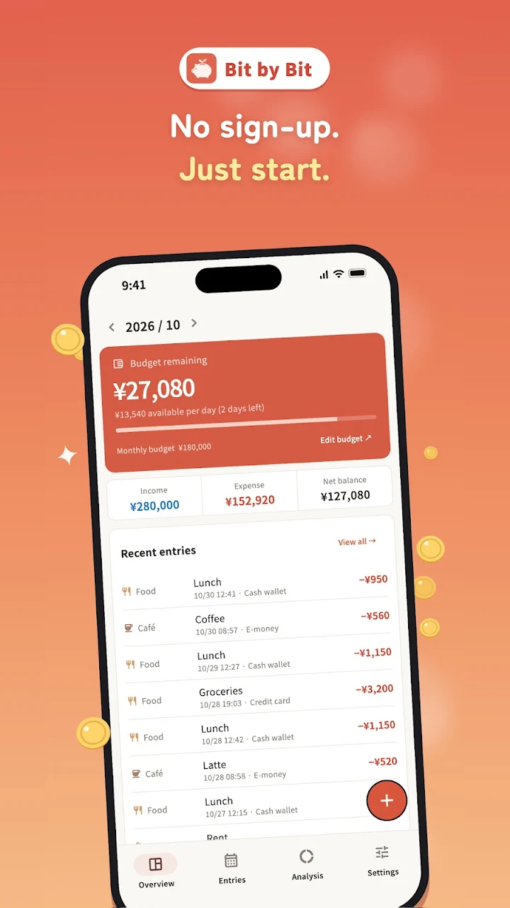
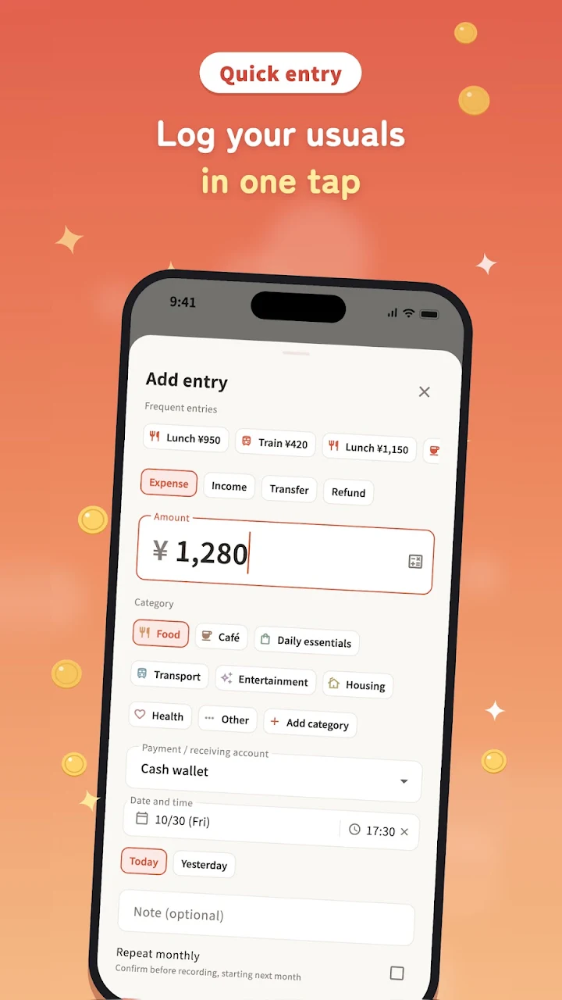
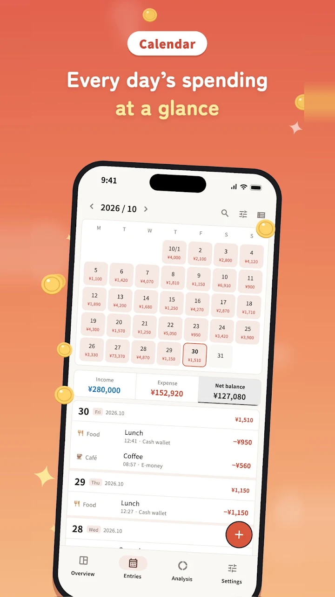
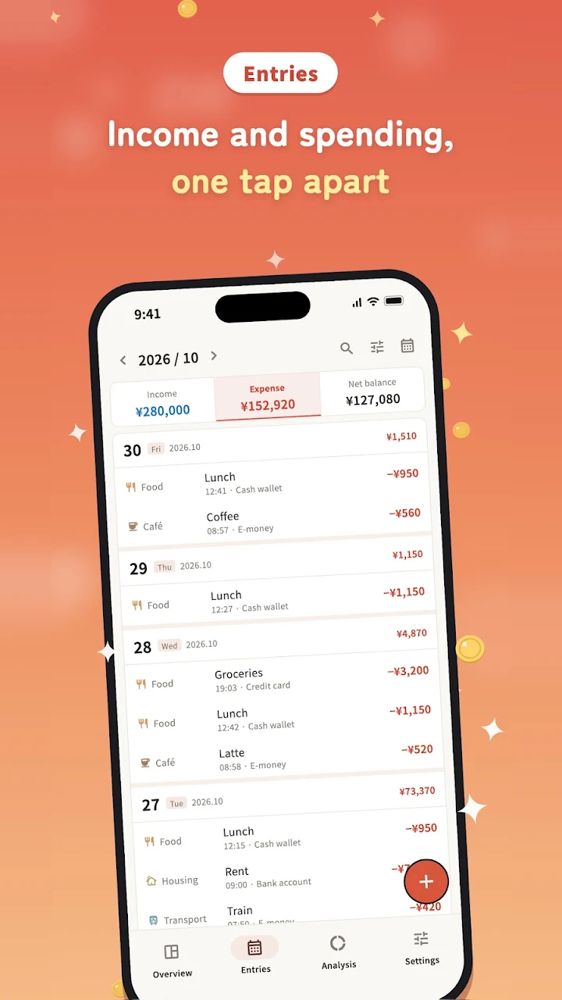

Bit by Bit
Budget book for Android
Your money, one entry at a time.
Bit by Bit is a simple, private budget book that runs entirely on your phone. No account, no cloud sync and no bank login.
Free on Android



What can you spend today?
Bit by Bit shows this on its overview. Try it with your own numbers.
You can still spend ¥0 a day
Screens
The month at a glance, quick entry, every entry and the calendar.

What it does
Quick entry
Income, expenses, refunds and transfers, with a built-in calculator. Turn frequent entries into one-tap templates, and undo a deletion straight away.
Budgets
A monthly budget and budgets per category, starting on the day you choose (1–28), and what you can still spend per day this month.
Analysis
Category charts, a six-month spending trend, a comparison with last month and all account balances at a glance.
Recurring bills
Add rent, subscriptions and other fixed costs, then confirm them when they're due.
Make it yours
Rename, recolour, reorder and change the icons of your categories. Light, dark or system theme.
Backup and lock
Full JSON backup and restore, CSV export and import, and an app lock with fingerprint, face unlock or your screen lock.
Before you download
- Price
- Free. Entries, budgets, analysis and backups are all in the free version. A one-time Premium purchase removes ads and adds four colour themes with matching app icons, and an annual report.
- Works on
- Android phones
- Languages
- 18 languages, including English, Japanese and Traditional Chinese
- Your data
- Everything stays on your device. No account needed.
- Good to know
- Amounts are kept in Japanese yen, as whole numbers. Bank sync, receipt scanning and family sharing are not supported.
On a computer? Scan with your phone's camera.